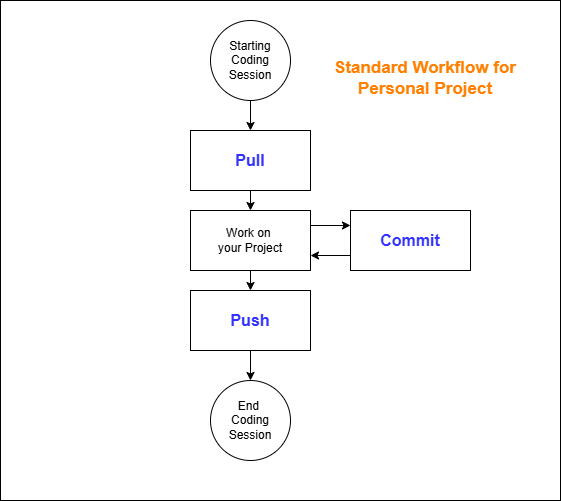
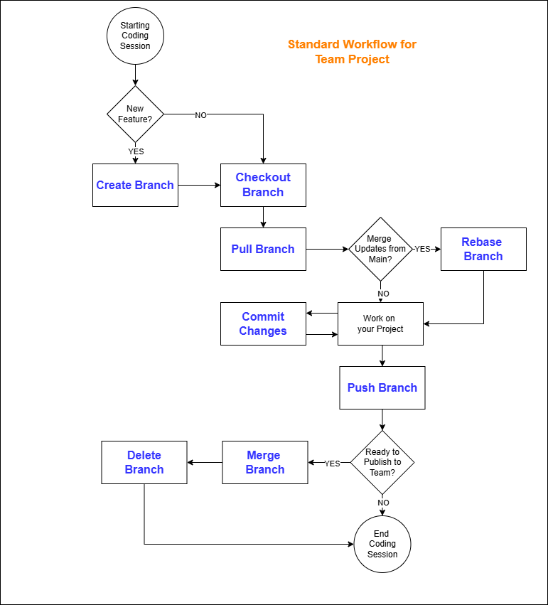

Git is a version control tool that is used for configuration management of software files.
GitHub is a place to share Git repositories in the cloud.
.gitignore is setup properly first.

| Command | Description |
|---|---|
git clone <url> |
Copy a shared repository from GitHub to your computer. |
git init |
Create a new repository on your computer. |
git add <file> |
Stage new or modified file in preparation to commit to your repository. |
git add . |
Stage all new and modified files in preparation to commit to your repository. |
git commit -m <message> |
Commit all staged files to the repository. |
git pull |
Merge all changes from GitHub into the repository on your computer. |
git push |
Publish all changes from the repository on your computer to GitHub. |
git push -u origin main |
Used to push the very first time to GitHub. |
git remote add origin <url> |
Specify the GitHub url associated with the repository on your computer. |
git status |
Report showing which files need to be committed. |
git log --oneline |
Report showing all commits made to the repository. |
git revert <commit> |
To undo a commit of a specific commit. |
git rm --cached <file> |
Remove a file from the repository but keep a copy in your folder. |
git checkout -b <name> |
Create a new branch in the repository on your computer and open it. |
git checkout <name> |
Open a branch you already created in the repository on your computer. |
git checkout main |
Open the main branch in the respository on your computer. |
git push -u origin <name> |
Used to push a branch for the first time to GitHub. |
git rebase main |
Used to merge changes from the main branch into your branch. |
git merge <name> |
Used to merge changes from your branch into the main branch. |
git branch -d <name> |
Used to delete a branch after it has been merged. |
git config --global user.name <your name> |
Set your name in the configuration on your computer. |
git config --global user.email <your email> |
Set your email in the configuration on your computer. |
Install Git on your computer: https://git-scm.com/
Set your name and email into the Git configuration.
Create a GitHub account: https://github.com/
Make sure you have a README.md and a .gitignore file in the top folder of your project.
Open your project in Visual Studio Code and publish your project as a public repository in GitHub.
Make a change to your project and from the terminal:
Repeat the previous step but use the built-in tools in Visual Studio Code.
What will the benefits be of dilligently using Git and GitHub with your personal project.